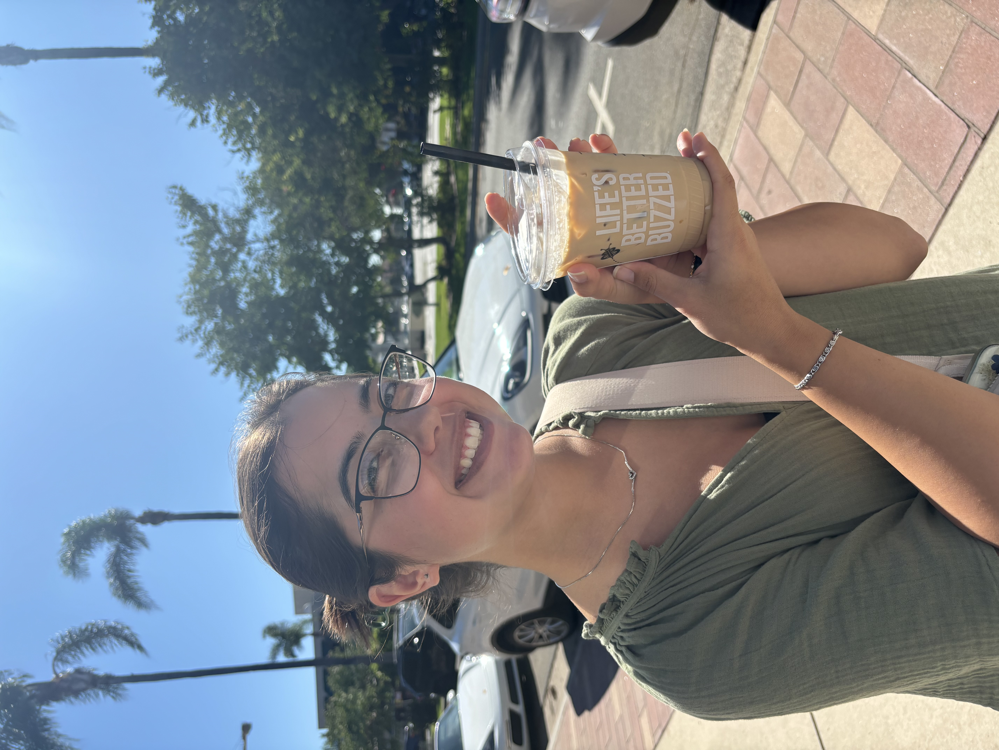
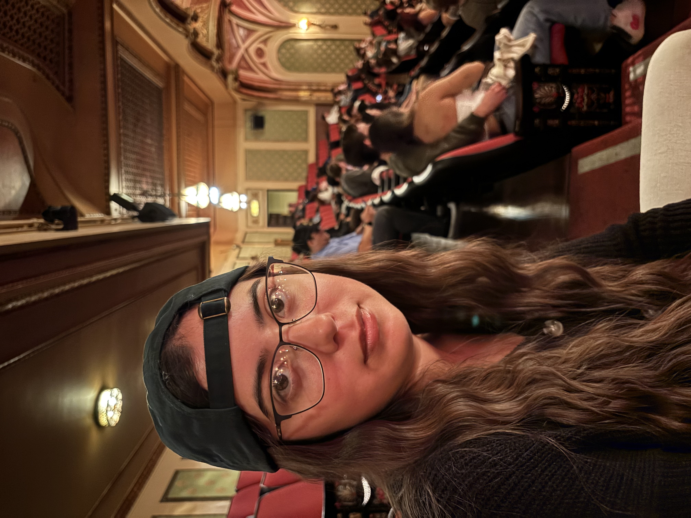
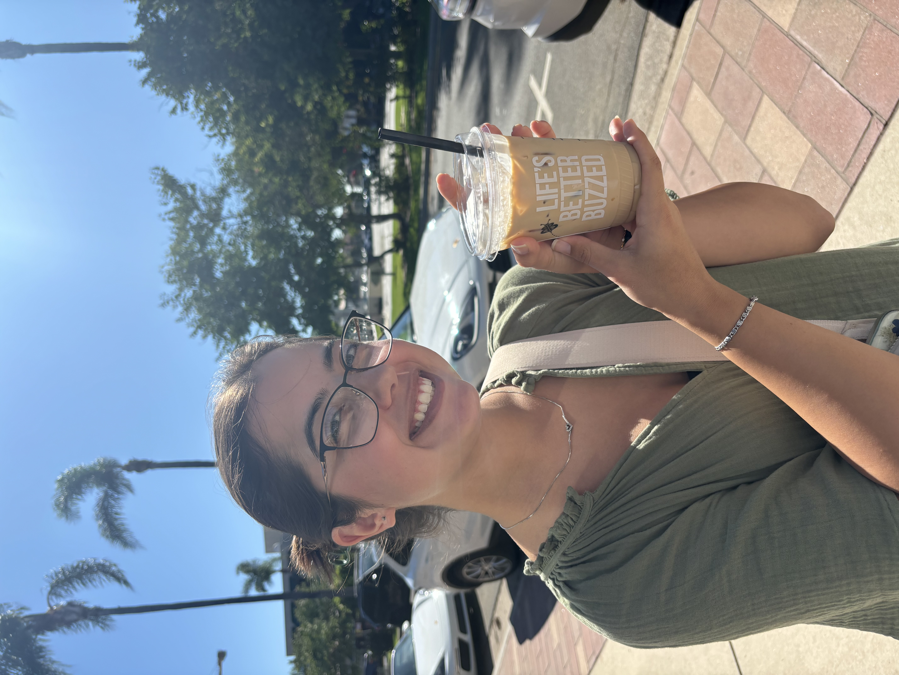
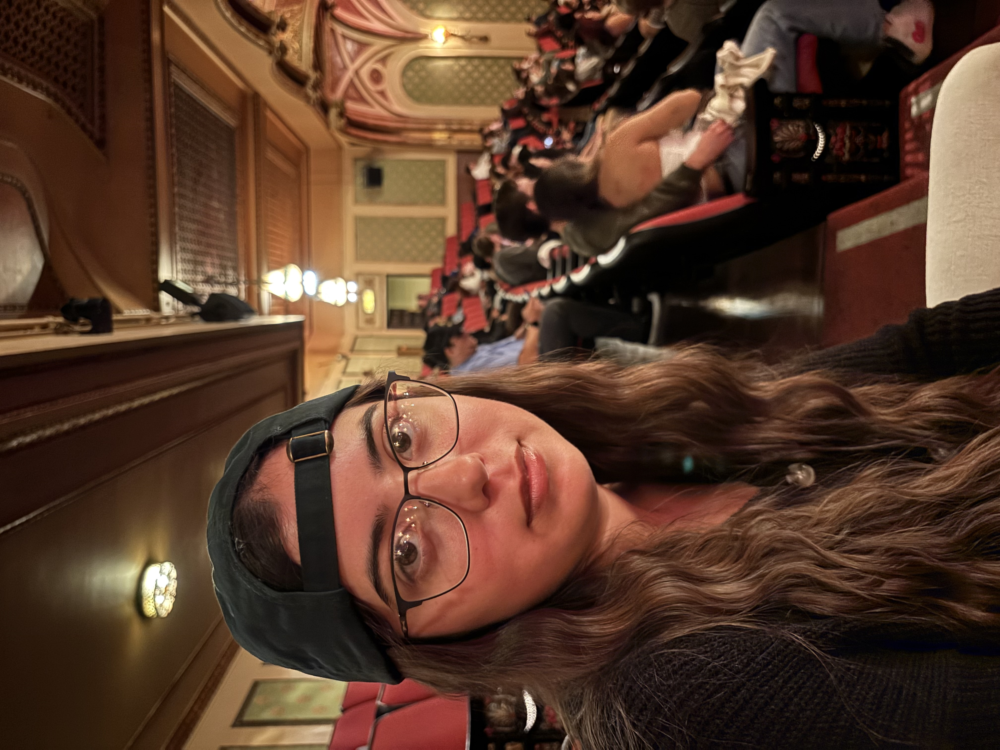

Currently, I am a fourth year animal science student studying at California Polytechnic State University - Pomona. In my free time I love a good fantasy book, spontaneous trips to the beach, baking sweet treats and crocheting various keepsakes.
 




Books
Adventures
Life
Out of 10's
yap yap yap
Today we took a fantastic trip to San Francisco! We saw a real SF flat today, I don't think I could move to the big city. We got lunch at Scoma's in Sausalito, where I tried oysters and alex tried clams for the first time! The restraunt was on the water with a beautiful view and delicious food. I ordered a cioppino wich was absolutely amazing. I have a picture on my out of 10 section, the bowl was bigger than my head! The weather was great, it was raining (my favorite) and we took the ferry, passing by Alcatraz island. [did the escapees live??? i think not] Tons of fun, 10/10 would recommend.

This was called the "Lazy Cioppino" which had mussels, clams, crab, prawn, and cod. It was unbelievably delicious. Whenever I see cioppino on the menu, I think of when I had it in Victoria, Canada overlooking the water. I will dream about that dish forever and ever. My rule of thumb is to never order seafood unless you can see the water where it came from. Who has business selling seafood in the middle of nowhere? Don't trust it. I'm scared of getting food poisoning. Luckily, Scoma's is so fresh and so tasty. I loved it, it was a great treat. I give -1 point because I only got 2 mussels and mussels are my favorite shellfish.

Alex and I spent the entire evening in Beverly Hills exploring and causing mayhem. Stopped by Polo Ralph Lauren on Rodeo drive to drop a few thousand on a new wallet (not). Then we had dinner at this really nice family owned italian place called Il Pastaio. I had an interesting mashup of sausage, noodles and spinach, with an interesting butter garlic sauce. Boyfriend had a bowl of creamy pumpkin tortellini. We thought it would be fun to try Cheesecake from THE Cheesecake Factory but we got gnarly stomach aches. 0/10 do not recommend. However, I DO recommend walking The Grove during the holiday season, they decorate it really nice and sometimes it even snows. I went into the 3 story Barnes & Noble for the first time also, it quite the sight to be seen.

We went to the beach! Spent all morning at the malibu country mart- which was fun because it was so gloomy and rainy. Kinda weird to see such a luxurious place so down in the dumps and dreary. We had lunch at Dukes- which honestly was a huge dissapointment but thats okay.